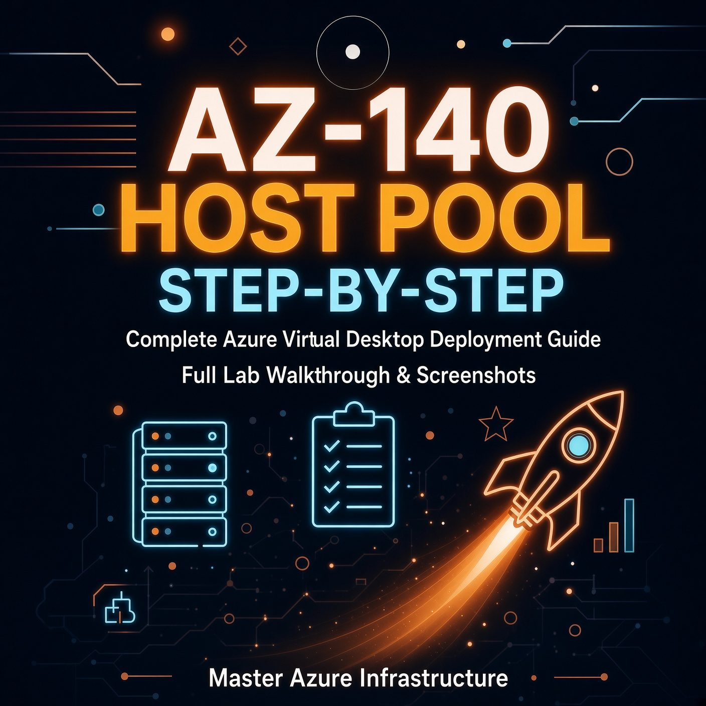

AZ-140 Lab Guide: Deploy Your First Azure Virtual Desktop Host Pool Step by Step
A practical walkthrough for AZ-140 candidates. You build a pooled host pool, add session hosts with a configuration, wire up a workspace, and give users a desktop. No theory dump.

You read the AZ-140 study guide and hit the first domain: Plan and implement an Azure Virtual Desktop infrastructure. It carries 40 to 45 percent of the exam weight. The fastest way to learn it is to deploy it. This guide gives you a repeatable lab you can run in a Visual Studio subscription without breaking your budget.
Before you start: prerequisites that actually matter
Microsoft lists long prerequisites. These four decide whether your lab succeeds or fails.
- Subscription and quota. Use a subscription where you can create VMs. Check quota for the D-series in the region you plan to use. The portal warns you late if you run out.
- Network reachability. Session hosts must reach Azure Virtual Desktop control plane URLs. Microsoft publishes a safe URL list. If you lock down outbound traffic with a firewall or NSG, allow those endpoints or registration fails with token errors. Run the Azure Virtual Desktop Agent URL Tool from the first host to validate.
- Identity choice. You need Entra ID at minimum. For this lab, pick Microsoft Entra ID joined if you want simplicity and modern auth. Pick Active Directory Domain Services if you need AD DS line-of-sight, existing Group Policy, or FSLogix on AD DS file shares. Do not mix them in one host pool. Every host in a pool must use the same identity provider and the same image.
- Permissions. Your account needs Desktop Virtualization Host Pool Contributor plus Virtual Machine Contributor on the resource group to create the pool and the VMs. You also need permission to assign users to the application group.
Architecture in one picture
Step 1: Prepare the network
Create a resource group, a virtual network, and a subnet for session hosts. This lab skips complex hub-spoke routing and focuses on what the exam tests: capacity, connectivity, and troubleshooting.
# Variables
$rg="rg-avd-lab"
$loc="eastus"
$vnet="vnet-avd"
$subnet="snet-hosts"
$kv="kv-avd-lab-001"
az group create -n $rg -l $loc
az network vnet create -g $rg -n $vnet --address-prefix 10.20.0.0/16 --subnet-name $subnet --subnet-prefix 10.20.1.0/24
az network vnet subnet update -g $rg --vnet-name $vnet -n $subnet --private-endpoint-network-policies Disabled
# Validate outbound access from the subnet (run from a test VM or use Network Watcher)
# Required endpoints are listed at https://learn.microsoft.com/azure/virtual-desktop/safe-url-listIf you enforce egress filtering, allow the AVD control plane FQDNs. A common lab failure is a host that joins the domain but never shows as Available because it cannot reach *.wvd.microsoft.com.
Step 2: Prepare identity and secrets
For Entra ID joined hosts, the exam expects you to know single sign-on, RBAC, and MFA interactions. For AD DS joined hosts, you need domain join credentials.
The current host pool experience uses a session host configuration and a managed identity. That identity reads secrets from Key Vault. You must give it access before deployment.
# Create key vault and store local admin + domain join secrets
az keyvault create -g $rg -n $kv -l $loc --enable-rbac-authorization true
az keyvault secret set --vault-name $kv -n vmAdminUsername --value "avdadmin"
az keyvault secret set --vault-name $kv -n vmAdminPassword --value "Use-A-Strong-Password-Here-123!"
# If joining AD DS, also store:
az keyvault secret set --vault-name $kv -n domainJoinUsername --value "svc-domainjoin"
az keyvault secret set --vault-name $kv -n domainJoinPassword --value "Another-Strong-Password-456!"
# You will grant Key Vault Secrets User to the host pool managed identity after you create the pool,
# or pre-create a user-assigned identity and assign it now.
az identity create -g $rg -n id-avd-hostpool
az role assignment create --assignee $(az identity show -g $rg -n id-avd-hostpool --query principalId -o tsv) \
--role "Key Vault Secrets User" --scope $(az keyvault show -n $kv --query id -o tsv)Step 3: Create the host pool with a session host configuration
The portal now creates a pooled host pool with a session host configuration by default. This object stores the VM size, image, name prefix, and domain join settings. You can create hosts now or set the count to zero and add them later.
- Search for Azure Virtual Desktop in the portal, select Host pools, then Create.
- Basics: Resource group
rg-avd-lab, namehp01, locationEast US, validation environment No, preferred app group type Desktop, host pool type Pooled, use session host configuration Yes. Host pool assignment type Automatic and load balancing Breadth-first works for a first lab. Depth-first packs users onto fewer hosts and saves cost, breadth-first spreads load. - Session hosts: Set number of session hosts to
2, name prefixhp01-sh, VM locationEast US, availability zones1,2, VM sizeStandard D4s_v5, imageWindows 11 Enterprise multi-session, version 23H2 + Microsoft 365 Appsif you plan to test Office, otherwise plain W11 multi-session. Virtual networkvnet-avd, subnetsnet-hosts. - Domain: Choose Microsoft Entra ID for this lab. If you chose AD DS, select Active Directory, point to your Key Vault secrets for domain join, and set the OU path if you use one.
- Administrator account: Point to your Key Vault secrets for
vmAdminUsernameandvmAdminPassword. - Workspace: Select Register desktop app group: Yes, create new workspace
ws01. This saves a manual step. - Review + create. Validation checks quota, name length, and Key Vault access. Fix any RBAC errors before you retry.
Portal equivalent in PowerShell (abbreviated, fill your IDs):
$hpParams = @{
HostPoolName = "hp01"
ResourceGroupName = $rg
Location = $loc
HostPoolType = "Pooled"
LoadBalancerType = "BreadthFirst"
PreferredAppGroupType = "Desktop"
ManagementType = "Automated"
}
New-AzWvdHostPool @hpParams
# Session host configuration (stored as subresource)
# Set vmSize, imageReference, namePrefix, vnet, subnet, identity, keyVault references
# See https://learn.microsoft.com/azure/virtual-desktop/deploy-azure-virtual-desktopStep 4: Confirm hosts are healthy
Deployment takes 10 to 15 minutes for two hosts. Check the pool:
az desktopvirtualization hostpool show -g $rg -n hp01 --query "{name:name, type:hostPoolType, lb:loadBalancerType}"
az desktopvirtualization session-host list -g $rg --host-pool-name hp01 -o tableYou want Status: Available for each host and AllowNewSessions: True. If you see Unavailable for more than 10 minutes:
- Open one host via Bastion or serial console and run the AVD Agent URL Tool.
- Check the AVD agent and boot loader services are running. If you deployed VMs outside the AVD flow, install the agents manually with
msiexec /i Microsoft.RDInfra.RDAgent...and the registration token. - Verify domain join succeeded. For AD DS, check the computer object exists in the OU.
Step 5: Verify the workspace and application group
When you created the pool with Register desktop app group enabled, Azure made a Desktop application group and registered it to ws01. Confirm:
az desktopvirtualization applicationgroup list -g $rg -o table
az desktopvirtualization workspace show -g $rg -n ws01 --query "{name:name, appGroups:applicationGroupReferences}"If you did not register during creation, create them manually:
az desktopvirtualization applicationgroup create -g $rg -n hp01-DAG --host-pool-arm-path $(az desktopvirtualization hostpool show -g $rg -n hp01 --query id -o tsv) --application-group-type Desktop -l $loc
az desktopvirtualization workspace create -g $rg -n ws01 -l $loc --friendly-name "Lab workspace"
az desktopvirtualization workspace update -g $rg -n ws01 --application-group-references $(az desktopvirtualization applicationgroup show -g $rg -n hp01-DAG --query id -o tsv)Step 6: Assign a user
A workspace means nothing until a user can see it. Assign your test account to the Desktop application group.
# Get your test user object ID
$userId=$(az ad user show --id "avduser@contoso.onmicrosoft.com" --query id -o tsv)
# Assign RBAC on the application group (or use a group)
az role assignment create --assignee $userId --role "Desktop Virtualization User" \
--scope $(az desktopvirtualization applicationgroup show -g $rg -n hp01-DAG --query id -o tsv)
# For the Entra ID joined scenario, also allow sign-in to the VM
az role assignment create --assignee $userId --role "Virtual Machine User Login" --scope $(az vm show -g $rg -n hp01-sh-0 --query id -o tsv)
az role assignment create --assignee $userId --role "Virtual Machine User Login" --scope $(az vm show -g $rg -n hp01-sh-1 --query id -o tsv)For Entra ID joined hosts, enable single sign-on and check Conditional Access does not block the Azure Windows VM Sign-In app with an MFA requirement that has no strong auth method registered. Exclude that app or require Windows Hello for Business.
Step 7: Connect and test
- Install Windows App (the successor to Remote Desktop) on Windows, macOS, or iOS, or use the web client at
https://windows365.microsoft.comfor a quick test. - Sign in as
avduser@contoso.onmicrosoft.com. You see ws01 and the SessionDesktop icon. - Launch the desktop. The first launch takes longer as the profile initializes.
- Inside the session, open
cmdand runwhoamiandhostnameto confirm you landed onhp01-sh-0orhp01-sh-1. Log off, reconnect, and note that breadth-first sends you to the host with fewer sessions.
WVDConnections to see connection time and host assignment. The exam now expects you to know this table.
Common fixes when the desktop does not appear
| Symptom | Check | Fix |
|---|---|---|
| No workspace in client | User assignment on app group, workspace registration | Add Desktop Virtualization User role, wait 5 minutes, refresh feed |
| Login fails on Entra joined VM | VM User Login role, SSO, Conditional Access | Assign role at VM or resource group scope, exclude VM Sign-In app from MFA |
| Hosts stay Unavailable | Outbound URLs, agent service, domain join | Allow AVD endpoints, reinstall agent with fresh registration token |
| Black screen then disconnect | NSG blocking return traffic, RDP Shortpath port | Allow outbound UDP 3390 for Shortpath, or fall back to reverse connect |
Clean up or keep for the next lab
Keep the pool if you plan to add FSLogix next. Profile containers need the same identity and a storage account, so this foundation pays off. Otherwise delete the resource group to stop VM and disk charges. The workspace and host pool have no cost on their own.
# Stop hosts to save cost but keep disks
az vm deallocate -g $rg -n hp01-sh-0
az vm deallocate -g $rg -n hp01-sh-1
# Or remove everything
az group delete -n $rg --yes --no-waitWhat AZ-140 asks about this lab
Expect questions on host pool types (pooled versus personal), assignment types, load balancing, session host sizing, and why you choose Entra ID joined versus AD DS. Know the RBAC roles: Host Pool Contributor to create, Desktop Virtualization User to consume, Virtual Machine User Login for Entra ID sign-in. Know that all hosts in a pool share the same image and identity, and that the workspace is the user-facing container while the application group controls what they see.
VHDLocations, and test with two logons. That configuration shows up in domain two and three of the exam and gives users a roaming profile that survives host reimaging.
Resources
- Deploy Azure Virtual Desktop with session host configuration – Microsoft Learn
- Add session hosts to a host pool
- Prerequisites for Azure Virtual Desktop
- Microsoft Entra joined session hosts
- AZ-140 study guide – skills measured
Lab tested on Windows 11 Enterprise multi-session 23H2, host pool with session host configuration (Automated), East US, May 2026 portal. Portal labels shift. If a blade name changed, search the Learn doc for the current path.
Test yourself: take the free AZ-140 practice test. Ten questions, three of them select-2, each answer explained and linked to Microsoft Learn.